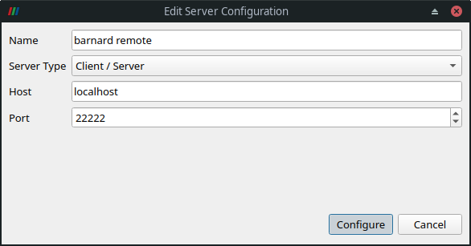

Visualization#
ParaView#
ParaView is an open-source, multi-platform data analysis and visualization application. The ParaView package comprises different tools which are designed to meet interactive, batch and in-situ workflows.
ParaView can be used in interactive mode as well as in batch mode. Both modes are documented in more details in the following subsections.
!!! warning WLOG ParaView module and cluster
Without loss of generality, we stick to a certain ParaView module (from a certain module
release) in the following documentation and provided examples. **Do not blind copy the
examples.**
Furthermore, please **adapt the commands to your needs**, e.g., the concrete ParaView module you
want to use.
The same holds for the cluster used in the documentation and examples. The documentation refers
to the cluster [`Barnard`](../jobs_and_resources/hardware_overview.md#barnard). If you want to
use ParaView on [one of the other clusters](../jobs_and_resources/hardware_overview.md), this
documentation should hold too.
ParaView Modules#
ParaView is available through the module system. The following command lists the available versions
marie@login$ module spider ParaView
[...]
Versions:
ParaView/5.10.1-mpi
ParaView/5.11.1-mpi
ParaView/5.11.2
[...]
Please note, that not all ParaView modules are available in all
module environments.
The command module spider <module-name> will show you, how to load a certain ParaView module.
??? example “Example on how to load a ParaView module”
For example, to obtain information on how to properly load the module `ParaView/5.10.1-mpi`, you
need to invoke the `module spider` command as follows:
```console
marie@login$ module spider ParaView/5.10.1-mpi
[...]
You will need to load all module(s) on any one of the lines below before the "ParaView/5.10.1-mpi" module is available to load.
release/23.04 GCC/11.3.0 OpenMPI/4.1.4
release/23.10 GCC/11.3.0 OpenMPI/4.1.4
[...]
```
Obviously, the `ParaView/5.10.1-mpi` module is available within two releases and depends in
both cases on the two modules `GCC/11.3.0` and `OpenMPI/4.1.4`. Without loss of generality, a
valid command to load `ParaView/5.10.1-mpi` is
```console
marie@login$ module load release/23.10 GCC/11.3.0 OpenMPI/4.1.4
```
Interactive Mode#
There are two different ways of using ParaView interactively on ZIH systems, which are described in more details in the following subsections:
GUI via NICE DCV
Client-Server mode with MPI-parallel off-screen-rendering
Using the GUI via NICE DCV#
This option provides hardware accelerated OpenGL and might provide the best performance and smooth handling. First, you need to open a DCV session on the Visualization cluster (use the Jupyter spawner and choose one of the VIS job profiles, then click on the DCV tile in the lower section named Other). Please find further instructions on how to start DCV on the virtual desktops page. In your virtual desktop session, start a terminal (right-click on desktop -> Terminal or Activities -> Terminal), then load the ParaView module as usual and start the GUI:
marie@dcv$ module load release/23.10 GCC/11.3.0 OpenMPI/4.1.4 ParaView/5.11.1-mpi
marie@dcv$ paraview
Since your DCV session already runs inside a job, which has been scheduled to a compute node, no
srun command is necessary here.
Using Client-Server Mode with MPI-parallel Offscreen-Rendering#
ParaView has a built-in client-server architecture, where you run the GUI locally on your local workstation and connect to a ParaView server instance (so-called pvserver) on a cluster. The pvserver performs the computationally intensive rendering.
!!! note
The ParaView version of the client, i.e., your workstation, needs to be of the same version as
the server.
Otherwise, you will encounter the error message "paraview client/server version hash mismatch"
when connection.
The pvserver can be run in parallel using MPI. To do so, load the desired ParaView module and
start the pvserver executable in offscreen rendering mode within an interactive allocation via
srun.
???+ example “Start pvserver”
Here, we ask for 8 MPI tasks on one node for 4 hours within an interactive allocation. Please
adapt the time limit and resources to your needs.
```console
marie@login$ module load release/23.10 GCC/11.3.0 OpenMPI/4.1.4 ParaView/5.11.1-mpi
marie@login$ srun --nodes=1 --ntasks=8 --mem-per-cpu=2500 --time=04:00:00 --pty pvserver --force-offscreen-rendering
srun: job 1730359 queued and waiting for resources
srun: job 1730359 has been allocated resources
Waiting for client...
Connection URL: cs://n1179:11111
Accepting connection(s): n1179:11111
```
Once the resources are allocated, the pvserver is started in parallel and connection information
are printed.
!!! tip “Custom port”
If the default port `11111` is already in use, an alternative or custom port can be specified
via the commandline option `-sp=<PORT>` to `pvserver`.
The output from pvserver contains the node name which your job and server runs on. However, since
the node names of the cluster are not present in the public domain name system (only
cluster-internally), you cannot just use this line as-is for connection with your client. Instead,
you need to establish a so-called forward SSH tunnel to your local host. You first have to resolve
the name to an IP address on ZIH systems using host in another SSH session. Then, the SSH tunnel
can be created from your workstation. The following example will
depict both steps: Resolve the IP of the compute node and finally create a
forward SSH tunnel to local host on port 22222 (or what ever port is preferred).
???+ example “SSH tunnel”
```console
marie@login$ host n1179
n1179.barnard.hpc.tu-dresden.de has address 172.24.64.189
marie@login$ exit
Connection to login2.barnard.hpc.tu-dresden.de closed.
marie@local$ ssh -L 22222:172.24.64.189:11111 barnard
```
!!! important “SSH command”
The previous SSH command requires that you have already set up your SSH configuration to
`Barnard` as documented on our
[SSH configuration page](../access/ssh_login.md#configuring-default-parameters-for-ssh).
The final step is to start ParaView locally on your own machine and configure the connection to
the remote server. Click File > Connect to bring up the Choose Server Configuration dialog. When
you open this dialog for the first time, you need to add a server. Click on Add Server and
configure as follows:

{: align=”center”}In the Configure dialog, choose Startup Type: Manual and Save. Then, you can connect to the
remote pvserver via Connect button.
A successful connection is displayed by a client connected message displayed on the pvserver
process terminal, and within ParaView’s Pipeline Browser (instead of it saying builtin). You now are
connected to the pvserver running on a compute node at ZIH systems and can open files from its
filesystems.
Caveats#
Connecting to the compute nodes will only work when you are inside the TU Dresden campus network, because otherwise, the private networks 172.24.* will not be routed. That’s why you either need to use VPN (recommended) or an SSH tunnel.
??? tip “SSH Tunnel”
When coming via the ZIH login gateway (`login1.zih.tu-dresden.de`), you can use SSH tunneling.
For the example IP address from above, this could look like the following:
```console
marie@local$ ssh -f -N -L11111:172.24.64.189:11111 <zihlogin>@login1.zih.tu-dresden.de
```
This command opens the port 11111 locally and tunnels it via `login1` to the `pvserver` running on
the compute node. Note that you then must instruct your local ParaView client to connect to host
`localhost` instead. The recommendation, though, is to use VPN, which makes this extra step
unnecessary.
Batch Mode (pvbatch)#
ParaView can run in batch mode, i.e., without opening the ParaView GUI, executing a Python script.
This way, common visualization tasks can be automated. There are two Python interfaces: pvpython
and pvbatch. The interface pvbatch only accepts commands from input scripts, and it will run in
parallel, if it was built using MPI.
!!! note
ParaView is shipped with a prebuild MPI library and **pvbatch has to be
invoked using this very mpiexec** command. Make sure to not use `srun`
or `mpiexec` from another MPI module, i.e., check what `mpiexec` is in
the path:
```console
marie@login$ module load release/23.10 GCC/11.3.0 OpenMPI/4.1.4 ParaView/5.11.1-mpi
marie@login$ which mpiexec
/software/rapids/r23.10/OpenMPI/4.1.4-GCC-11.3.0/bin/mpiexec
```
The resources for the MPI processes have to be allocated via the
batch system option --cpus-per-task=<NUM> (not --ntasks=<NUM>,
as it would be usual for MPI processes). It might be valuable in terms of runtime to bind/pin the
MPI processes to hardware. A convenient option is --bind-to core. All other options can be
obtained by
marie@login$ mpiexec --help binding
or from mpich wiki.
In the following, we provide two examples on how to use pvbatch from within a job file and an
interactive allocation.
??? example “Example job file”
```Bash
#!/bin/bash
#SBATCH --nodes=1
#SBATCH --cpus-per-task=12
#SBATCH --time=01:00:00
# Make sure to only use ParaView
module purge
module load release/23.10 GCC/11.3.0 OpenMPI/4.1.4 ParaView/5.11.1-mpi
pvbatch --mpi --force-offscreen-rendering pvbatch-script.py
```
??? example “Example of interactive allocation using salloc”
```console
marie@login$ salloc --nodes=1 --cpus-per-task=16 --time=01:00:00 bash
salloc: Pending job allocation 336202
salloc: job 336202 queued and waiting for resources
salloc: job 336202 has been allocated resources
[...]
# Make sure to only use ParaView
marie@compute$ module purge
marie@compute$ module load release/23.10 GCC/11.3.0 OpenMPI/4.1.4 ParaView/5.11.1-mpi
# Go to working directory, e.g., your workspace
marie@compute$ cd /path/to/workspace
# Execute pvbatch using 16 MPI processes in parallel on allocated resources
marie@compute$ pvbatch --mpi --force-offscreen-rendering pvbatch-script.py
```
Using GPUs#
ParaView pvbatch can render offscreen through the Native Platform Interface (EGL) on the graphics
cards (GPUs) specified by the device index. For that, make sure to use a cluster with GPUs
(e.g. Alpha, Capella; see hardware overview),
and pass the option --displays $CUDA_VISIBLE_DEVICES to pvbatch.
??? example “Example job file”
```Bash
#!/bin/bash
#SBATCH --nodes=1
#SBATCH --cpus-per-task=12
#SBATCH --gres=gpu:2
#SBATCH --time=01:00:00
# Make sure to only use ParaView
module purge
module load release/23.10 GCC/11.3.0 OpenMPI/4.1.4 ParaView/5.11.1-mpi
pvbatch --mpi --displays $CUDA_VISIBLE_DEVICES --force-offscreen-rendering pvbatch-script.py
```